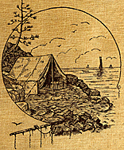

THE TENT GOES UP.

OUR tent is up. Not only up, but it has a board floor When Mrs. Yates went across Salt Pond that day, in desperate pursuit of some man who would be willing to work for a few hours, she was successful far beyond anything we had hoped. When her dory was seen coming back, after a long absence, it contained a man, and that man proved to be a carpenter. He actually brought a few tools with him, and could use them without complaining of being tired. As I had expected, Cap'n Asel lingered near until he learned why Maria Jane had gone; then he limped away over the ridge to tell the inhabitants that '' them women had got a man to work for 'em finally, 'n' he guessed they 'd got a lesson now not to come down here agin without no man."
Indeed, we had that lesson thoroughly learned.
The man worked leisurely, but to Maria Jane, accustomed to the movements of her husband, this work seemed to be goin, on with lightning-like rapidity. To use her own words in description afterward "that tent was yanked up quicker 'n scat."
We felt that we deserved to have it reared in this way at last. Mrs. Yates remained with us, and helped us unpack our scanty furniture. For spectators we had, most prominent of all, the mastiff, who sat gazing with so much calmness that he even occasionally nodded in a short nap. There were two women from the house nearest, who stood for hours with their aprons flung up in an artful manner over their heads, their rough brown hands hanging before them, their eyes not missing a single article as it was untied or unwrapped. On a line with them was Cap'n Asel, who for some unaccountable reason was late in arriving, but whose attention, after he did come, never wandered for an instant. Occasionally, from the house up the slope of the hill where the two women lived, three small children would wander down, and make such statements as the following:--
"Ma! ma! The water's all b'iled outer the greens! "
"Ma! ma! The gingerbread's burnt as black's the back! "
"Ma! ma! I've cut my finger tryin' to skin them perch!"
"Ma! I say, ain't it time fur the chowder?"
These announcements were received usually with great stolidity, and replied to in this wise:--
"Put more water in the pot's quick's ever you can."
"If it's a-burnin', shet the back damper."
"Lor! That cut ain't nothin'."
I was rather sorry for the children, for they wanted to stay and see the tent furnished, and would stand in that openly spellbound manner peculiar to children, until they were hustled off up to the house, to remain until they could think of some other excuse to seek their mothers' society.
The articles we were placing in the tent were of the simplest description, but I could hardly believe that fact when I saw the intense scrutiny with which they were all viewed.
We could not have been watched more closely had we been performing the most extraordinary tumbling feats. I suppose there is almost nothing in the way of entertainment for such women. They do not have even the mild excitement of catching fish or of tending lobster-pots. What they know is what their husbands tell them, and this source of information is neither large nor deep. This particular place we had chosen for our tent because it was removed from the cluster of little summer cottages, which occupied the more picturesque portions of the shore. But these houses and hotels were too far away for these women to have a chance to give them much close inspection. It was the men who, in the season, walked up to the summer dwellings with baskets of fish and lobsters, and charged a startling price for their wares. "The nigher you be to where fish is caught, the higher they naturally be," said Cap'n Asel to me once, when I objected to paying more for a codfish than I would have to do in a city market. "It's plain enough why it should be so," he went on in an argumentative manner; "for, you see, the nigher, the better the quality. A cod that was a-skitin' through the briny half an hour ago's better than arter he's ben in a icechist a day or two. Ain't that so? "
This was reasoning to which I had no reply.
It seemed an almost incredible thing to these people, particularly the women that we, being women, could really be intending to live in a tent, although it should have been plain to them that this transient abode was really going to be more comfortable than the homes where some of them dwelt.
"It might do well 'nough for men folks," said one doubtfully, "but it don't seem proper, somehow."
The idea of propriety was before their eyes. "I should n't wonder a mite if you got talked about," said this same woman "Randy Rankin told me yisterday that 't wa'n't fittin' for you two to be here alone. 'N' somehow it seemed wuss she said, "for ye to hev a dorg's big as that. You see, we ain't used to no such dorg's that. It makes the whole place kinder different to know that there's such a animil round. Will he break inter folkses houses 'n' jump at folks in their beds? "
"It is not his custom to do so, unless specially ordered," said Carlos.
"Wall, Randy said dorgs o' them color, so kinder light, 'n' so kinder dark round head, was of the breakin' - in kind. She thought it needed a man ter tend ter him."
We assured our companion that Randy Rankin was entirely mistaken in her judgment of dogs of "them color," and that her imagination probably ''ran away with her" on this topic.
While we were making this explanation, it was discovered that our kerosene cookstove was not present among the luggage. The tin oven and various kettles had come, but the part of the stove which held oil and produced heat was absent. This was a blow. How could we "board ourselves" without this all-important article? And it would be several days before an expressman could be notified and deliver it. We began to feel as if Providence did not favor our project of camping out on the South Shore.
Consulting with Mrs. Yates concerning this dilemma, she advised us to see if we could not take our meals, until our stove came, with the Widder Marlow, who lived at the east end of the ma'sh. The Widder Marlow had two boarders now, folks who came early and stayed late every year. The place was almost half a mile away, at the end of the path which led along the ridge, and close to a salt marsh, which was overflowed only at the highest tides of spring and fall. There were times when this marsh sent forth such an odor that it would rouse us from sound sleep in the middle of the night. It was a penetrating, fetid, brimstone sort of an odor that was horribly suggestive. This would come after a rain, and when the wind was in a particular corner of the south. I never imagined anything could send out such a stench, and was astounded when Cap'n Asel told us that "that smell was the main thing which made this part of the shore so healthy. There wa'n't no smell like it on the whole coast,"--this we believed;" 't was good for the chist, 'n' 't was good for the stummick. Ef it had n't er ben for that ma'sh smell, his lea 'd ben a good deal wuss'n' 't was."
There was in my mind often a suspicion that Cap'n Asel was not talking what, as children, we used to call "honest Indian." I look at him curiously to discover any sign of insincerity, but I have not yet found any such sign. He is ignorant enough and selfconceited enough not to know any better than he talks. It must be his solemnity that makes me suspect him.
Maria Jane went with us that forenoon to Widow Marlow's. We had risen so early, on account of Mr. Morse's wish to get into his barn, that at eleven o'clock it already seemed as if it were a week since that hour in the foggy morning twilight when I had accompanied Mr. Morse as a protector against Max. Mrs. Marlow's residence was a two story building, very straight and very narrow, with nothing whatever to break its up-and-down look; even the windows and doors were exactly flush with the surface, an effect which I never before saw reached to such a monotonous degree. Of course there was not a tree, for there are no trees in the vicinity. If you stay on this coast, it is because of love for the sea and the gray rocks and grayer shore, not for love of green trees or shrubs or grass. Except when the ocean is green, there is an entire absence of that hue. The marshes never have that color which is the characteristic of inland vegetation, but they have their own restful shade.
Mrs. Marlow was cleaning her "front entry," when we arrived; she was also giving orders through the space between that and the kitchen to some one in the latter place, who was invisible, but who, we judged, was making a chowder. Mrs. Yates related our story, and hoped that Mrs. Marlow could give us our meals for a few clays. Mrs. Marlow was a large woman, with more pretensions to dress than any person I had yet seen here. She had a flounce on the bottom of her gown, and one nearly as large about the neck.
She said that she was very much flustered by our sudden arrival, and hoped we would excuse the looks of the front entry, but she "had been hendered 'bout her cleanin' house. When the entry was clean 't would have a different look. The picture of President Garfield," now on the floor, with its back to us, "sort of set off the entry some, when hung." She had a very deprecatory air, which we found later was not entirely the effect of being caught cleaning house, but was habitual. She finally said:--
"Wall, if you'll take us just as we be, you may come. Our regulars come last week, 'n' we sha'n't have to cook much more for you two."
She said that dinner would be ready at twelve exactly, and now we were there we might as well come into the parlor and wait.
We went into the parlor, which room had the same general look peculiar to the outside of the house. There were some pink and white shells on the table; on the walls a very highly tinted picture of Grace Darling in a very small boat just rising on the top of a very large wave; and opposite, the carefully dried remains of a cigar-fish. As Mrs. Marlow was leaving the room, she paused and looked at us a moment in hesitation. Then she said:--
"Our regulars are Mr. Simms and his sister. They are very, very nice people, strictly fust-class. But Mr. Simms is poorly in his health, and consequently is low in his spirits; sometimes he's 'bout as blue as a whetstone. You look's if you might be kind of lively; I do wish you 'd try and chipper up Mr. Simms."
She closed the door, and went heavily along the now cleaned entry.
Carlos looked at me a moment in silence. Then she asked if I intended to chipper up Mr. Simms.
 CHAPTER
IV - CHIPPERING UP MR. SIMMS
CHAPTER
IV - CHIPPERING UP MR. SIMMS
The editors of this World Wide Web edition of Maria Louise Pool's work are interested in hearing from the readers. Your response and comments will be useful in making future decisions on expanding the selections offered. Please e-mail carlos@burrows.com.
 J.R.
Burrows & Company
J.R.
Burrows & Company
P.O. Box 522
Rockland, Massachusetts 02370
E-mail:
merchant@burrows.com
Phone: (800) 347-1795; Phone: (781) 982-1812 Fax: (781) 982-1636